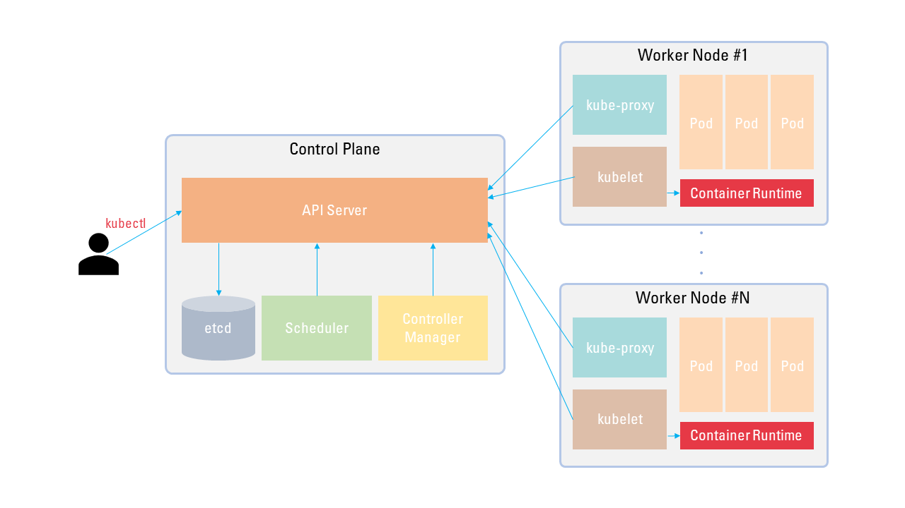

Having been struggling with Kubernetes clusters in the project I’m currently working on, I felt the need to understand Kubernetes architecture.
While googling I found a great resource presented by Saad Ali, which gives a deeper insights on the design principle of Kubernets.
This article can be said as a brief summary of the video. The talk is from 2018. Year 2018 sounds like an ancient times for the Kubernetes history, but he delivers the essence of Kubernetes philosophy.
The video can be found here.
1 Kubernetes Architecture - Main Components
Kubernetes Cluster is divided into two parts:
- Control Plane
- Worker Node
Control Plane
As the name itself suggests, the Control Plane manages the whole cluster and Kubernetes objects.
It responds to any changes end-users(or other components) requested, sets the desired state of the cluster, and tries to match the current state to the desired state.
The Control Plane consists of:
API Server: Provides an API endpoint for users/components. Every workflow is executed via this API server. No Kubernetes component communicates each other directly.etcd: Any objects created through the API server and the state of a cluster are stored here in a persistent manner. Only API Server can communicate to etcd.Scheduler: Queries the API server to watch for any unassigned objects, assigns them to one of available worker nodes.Controller Manager: Synchronizes the actual state of a cluster to the desired state.
Worker Node
Worker Node is where the actual Pods are running. Inside a pod, container(s) is/are launched by the configured container runtime(mostly Docker, for now). The Worker Node has following components:
kubelet: Manages everything running on that node. Monitors API server looking for assigned pods to that node, and reports any events on that node to API server.kube-proxy: Ensures network is properly configured for a cluster. Configuresiptableson a node.
In addition to those components I mentioned above, there are other components like kube-dns, but let’s hold them over till next time.
2 Design Principles of Kubernetes
This section focuses on why Kubernetes is designed this way. Like I said in the beginning, this section is extracted from the talk by Saad Ali. Thank him for sharing his great insight on Kubernetes. 👏👏
Kubernetes cluster is designed to be robust, to be fault-tolerent, and to minimize users' burden to manage clusters.
4 Design principles below accomplished the purposes, and led to the current success of Kubernetes.
1) Kubernetes APIs are declarative, rather than imperative
Users just declare what the desired state of a cluster would be, then the system internally manages to drive the given desired state.
What would happen if we used imperative APIs?
You should ssh into each node and command to that node like “Run this pod. If the pod fails, restart it… blah blah”
It would be darn complicated to give every condition and handle all failure cases.
However, Using declarative APIs makes our life a lot easier. Users only need to state “I want my cluster to be …,” then the magic happens! When Pods are dead, or even some nodes crashed, the Control Plane will drive the actual state to the desired state using available resources.
2) There are no hidden internal APIs
Kubernetes internal components use exactly the same APIs which end-users use to communicate each other.
This makes Kubernetes easily configurable(Everyone knows it’s not easy though😭). You can even build a custom scheculer.
Moreover, Communication between Control Plane and Worker Node(s) can take the same advantage of using declarative APIs. Let’s say our Control Plane uses imperative APIs when talking to Worker Nodes. We achieved user-API’s simplicity, but Control Plane implementation would be a mess.
Instead, Kubernetes adopted the same aproach. Each Worker Node keeps watching Contorl Plane’s API server if there exists any updates. Control Plane only needs to set the desired state of each Worker Node. Each Worker Node takes care of what should happen on the node.
Mr. Ali describes that this mechanism is like “level-triggered” instead of “edge-triggered.”
Those terms level-triggered and edge-triggered are originally used in electronics, but the analogy makes sense.
Edge-triggered means event-based, which means the Control Plane should signal to nodes whenever they needs get requests. If a node crashes for a while and gets back later, Contorl Plane must have a mechanism to resignal all the missing events to the restored node.
Level-triggered architecture, in contrast, sets the state. In this system, a node which suffered from malfunctioning and managed to return ready knows what it’s supposed to do because all it needs to do is just query the state and do the job declared in that state.
This removes a single point of failure. Even when the Control Plane is down, all Worker Nodes can do what they’re supposed to do based on the last state they queried.
3) Meet the user where they are
One of primary goals of Kubernetes was the ability to migrate existing applications without additional modification.
This is closely related to passing data or configuration to the running application. Kubernetes supports the following:
Secret- can be used when storing sensitive data like passwordConfigMap- can be used when storing configuration informationDownwardAPI- can be used when retrieving pod’s metadata
Data objects are stored in the Control Plane, but Pods should access the data inside those objects. Letting pods know the API server endpoint is additional modification which hinders transition to Kubernetes.
Instead of communicating directly with API server in the Control Plane, Kubernetes allows data objects to be mounted as a file or environment variables in a container. In this manner, users need not amend the application itself, they just create some data objects and indicate that Pod A needs ConfigMap A.
4) Workload Portability
Decouple distributed system application development from cluster implementation.
One of biggest advantages of Kubernetes is that users can deploy applications exactly the same way regardless of which Kubernetes cluster they’re working on. Kubernetes is designed to provide true abstraction layer to users so that they need not consider which machine the cluster is configured, OS, or devices.
For example, Kubernetes supports referencing Cloud storages(GCE PD, AWS EBS, etc) directly when creating a Pod. But it should never be done like that way, because it prevents moving that Pod to another Cloud Service Provider.
Instead, Kubernetes provides what it’s called PVC(PersistentVolumeClaim) / PV(PersistentVolume). This decouples storage consumption from storage implementation. User-facing abstraction layer can be portable.
This led to Kubernetes' current success and popularity.
👉 Thank you for reading my post ! 🙏
👉 Please leave a comment if you have any ideas to share ! 🎶
Комментарии